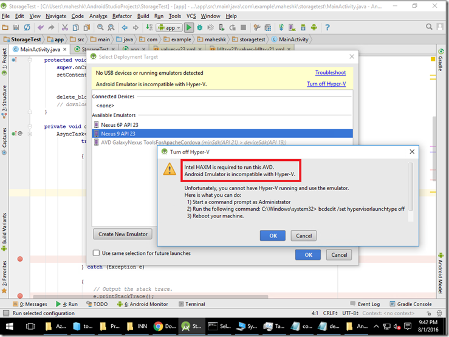

Issue with Android Emulator running under Hyper-V (VM’s)
Maheshk [MSFT]Recently I prepared a VM in our lab for checking an issue repro. The issue was with Android Studio running(Java code) hitting Azure Storage blobs throwing an exception for some weird reason. So quickly jumped in creating a Lab machine and installed all the software like Android Studio, ton of updates and 90+ packages having various emulators. It took quite sometime to install everything(tiring), fix the Java path(this is pain and behaves differently between editors) etc.
After setting up all, I ran the code for the first time happily but got this error which brought everything to halt. After bit of research, learned that we cannot run phone emulators within a Hyper-Vised (VM‘s), looks like emulator runs under another Hyper-V which means running Hyper-V in another Hyper-V not supported.

Solution:- We may have to use our own laptop/physical machine connecting to phone directly with USB cable  . This gives good experience rather emulator way. this is also faster when it comes to debugging or disconnect or redeploy or tracing end to end.
Let me know if there is a way to mitigate this along with your dev setup experience. Any tips and tricks also welcome..
Happy learning !
. This gives good experience rather emulator way. this is also faster when it comes to debugging or disconnect or redeploy or tracing end to end.
Let me know if there is a way to mitigate this along with your dev setup experience. Any tips and tricks also welcome..
Happy learning !
{kind=link}